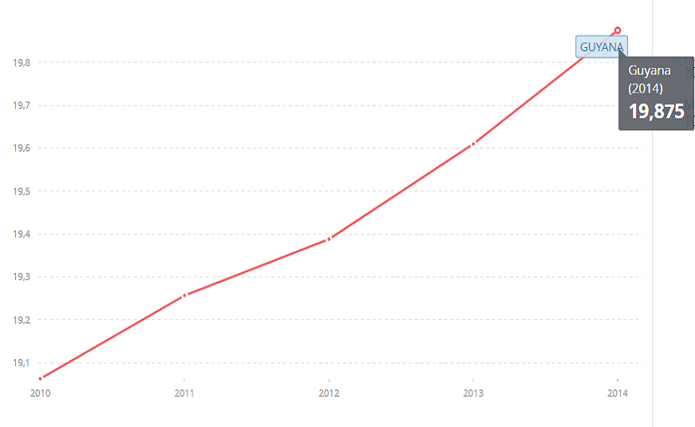
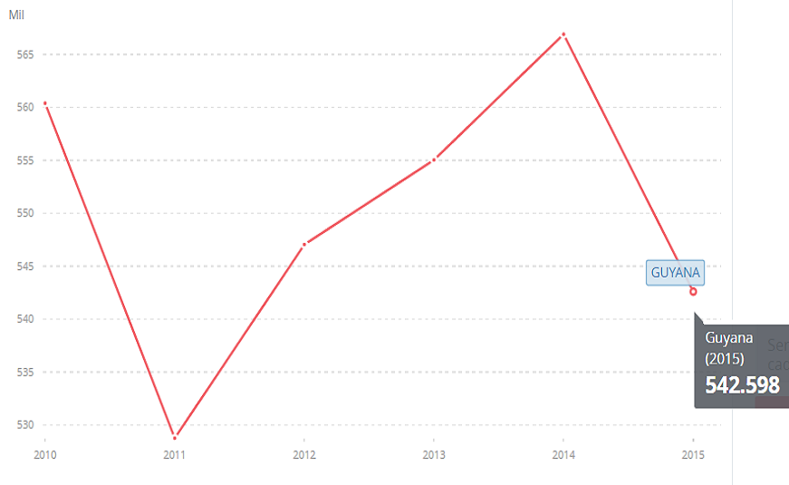
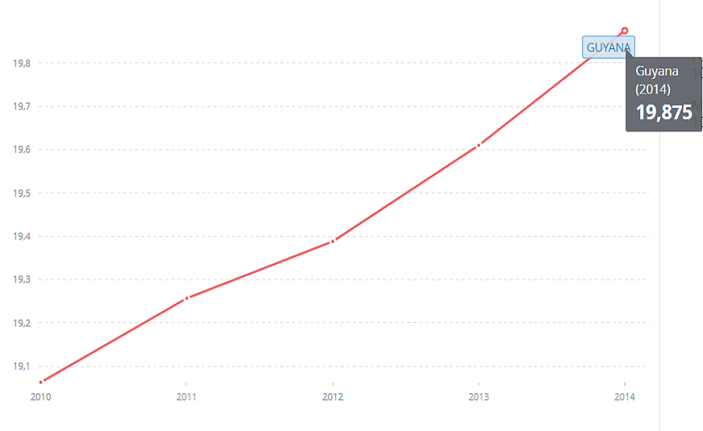
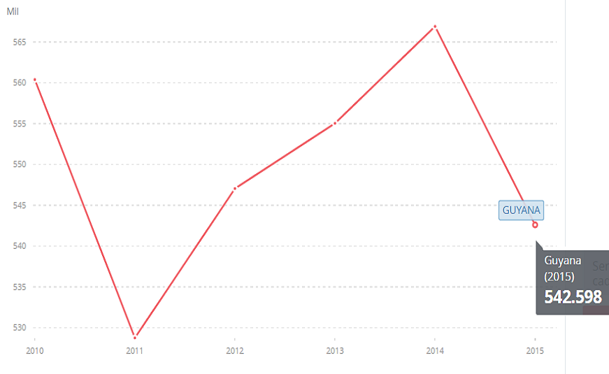

GUYANA
ESTADÍSTICAS
SUSCRIPCIONES TELEFÓNICAS FIJAS (por cada 100 personas) PORCENTAJE DE LA POBLACIÓN QUE UTILIZA INTERNET

SUSCRIPTORES A TELEFONÍA MÓVIL
ENTIDADES REGULADORAS


GUYANA
SUSCRIPCIONES TELEFÓNICAS FIJAS (por cada 100 personas) PORCENTAJE DE LA POBLACIÓN QUE UTILIZA INTERNET
SUSCRIPTORES A TELEFONÍA MÓVIL
